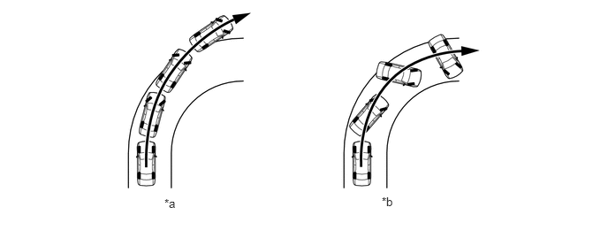
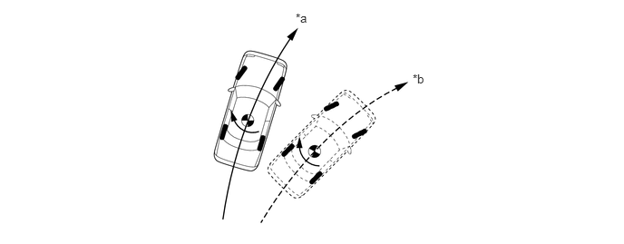

- The front wheels are slipping more than the rear
| Last Modified: 10-07-2025 | 6.11:8.1.0 | Doc ID: NM100000002GOKH |
| Model Year Start: 2024 | Model: Tacoma | Prod Date Range: [12/2023 - ] |
| Title: BRAKE CONTROL / DYNAMIC CONTROL SYSTEMS: BRAKE CONTROL SYSTEM (for Gasoline Model): VEHICLE STABILITY CONTROL (VSC); 2024 - 2026 MY Tacoma [12/2023 - ] | ||
VEHICLE STABILITY CONTROL (VSC)
SYSTEM CONTROL
(a) The ABS and TRAC systems help to ensure vehicle stability primarily when braking and accelerating, while the VSC system ensures directional stability of the vehicle. Depending on the road conditions, vehicle speed, sudden steering maneuvers and other outside influences, a strong understeer or oversteer condition can occur. In this situation, the VSC system controls the brake force of each wheel and the drive force of the drive wheels in order to minimize the understeer or oversteer and ensure vehicle stability.
(1) The VSC system uses signals from various sensors such as the yawrate sensor to detect the vehicle condition in order to control the brake fluid pressure and drive force.
(2) When the lateral grip of the tires is exceeded, the following situations can occur.
|
*a |
Understeer |
*b |
Oversteer
|
(b) Strong Understeer Judgment
(1) The skid control ECU determines if the vehicle is understeering based on the target yaw rate and the actual yaw rate. When the driver turns the steering wheel, if the actual yaw rate of the vehicle is less than the target yaw rate (determined based on the vehicle speed and steering wheel angle), the skid control ECU determines that the vehicle is understeering due to the insufficient turn rate.
Understeer Judgment
|
*a |
Actual Vehicle Path (Actual Yaw Rate) |
*b |
Vehicle Path Based on Target Yaw Rate |
(c) Strong Oversteer Judgment
(1) The skid control ECU determines if the vehicle is oversteering based on the slip angle and slip angular velocity. When the slip angle and slip angular velocity are large, the skid control ECU determines that the vehicle is oversteering.
Oversteer Judgment
|
*a |
Path of Center of Gravity of Vehicle |
*b |
Longitudinal Centerline of Vehicle |
 |
Slip Angle |
- |
- |
(d) VSC Operation Method
(1) When the skid control ECU determines that the vehicle is understeering, the skid control ECU limits the drive force and controls the brake force of each wheel in order to generate a moment that minimizes the understeer.
Understeer Control
 |
Brake Force |
|
Control Moment |
(2) When the skid control ECU determines that the vehicle is oversteering, the skid control ECU primarily controls the brake force of the outer wheels to generate a moment toward the outside of the turn in order to minimize the oversteer. This control ensures stability of the vehicle while also reducing speed.
Oversteer Control
|
Brake Force |
|
Control Moment |